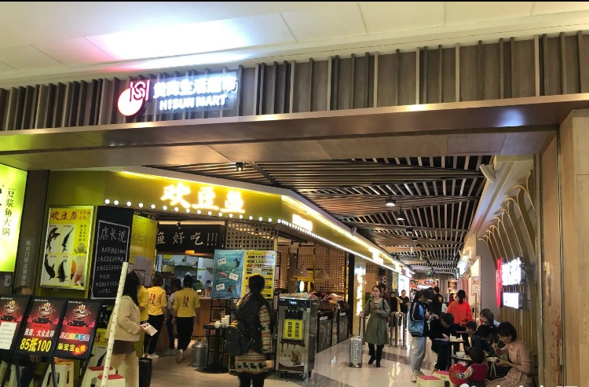

连载·黄冈日记①｜“穿防护服戴口罩和护目镜”的人突然来了
原文链接 备份链接 特邀作者 杨梅 程定琴 郝诗光 金昊 澎湃新闻记者 方岸 杜心羽 吴佳颖 整理 2020-03-06 07:12 来源：澎湃新闻 字号 【编者按】 新冠病毒给湖北乃至全国带来一场危机，黄冈是这场疫情的重灾区之一。在这场 …
特邀作者 程定琴 郝诗光 梦轩 金昊 澎湃新闻记者 方岸 杜心羽 吴佳颖 实习生 李佳悦 整理
2020-03-08 07:41 来源：澎湃新闻
字号
【编者按】
新冠病毒给湖北乃至全国带来一场危机，黄冈是这场疫情的重灾区之一。
在这场战役中，黄冈人经历了旁观-卷入-创伤-斗争-反思的过程。我们用亲历者日记连载的形式，试图纵深还原疫情侵袭下的黄冈这60天。
_

_1月18日，黄冈市中心医院呼吸内科医生办公室，医护们穿着防护服拍了张合影照
【程定琴：黄冈市中心医院呼吸内科护士】
1月18日
今天我们终于有了战袍——医用防护服。
我们呼吸内科成为医院首个收治新冠肺炎的隔离点，也只能算是集中收治，因为我们病房就是普通病房，暂时达不到隔离病房的要求，患者跟我们医务人员的空间是相通的。今天终于能有防护服，我们都高兴坏了，因为我们知道终于多了一道防护，多了一份安全。
我们科室早已收满，医院已经出现一些类似病患难以收治的情况，希望尽快有好的解决办法。
科室已经越来越忙了。为了防止病人家属被感染，我们已经清除了所有的陪护家属。不方便下床的患者的生活方面担子全都落在我们医护人员身上。每天除了给患者做最基本的治疗，输液，换药，采集动静脉血标本，吸氧，雾化，上下呼吸机，高流氧治疗……还要给他们打开水，倒茶，丢垃圾，搀扶下床大小便，翻身，换床单被套，倒尿壶便盆，甚至给卧床不起的患者换尿不湿擦身体。一日三餐家属送到门口，我们接过来转交给患者。一天忙下来，有时连喝水的时间都没有。
下班的时候，我们每个人把防护服小心翼翼地脱下来，写上自己的名字，叠好，放入准备好的袋子里，留着明天上班穿。因为我们整个科室领到的防护服都不够人均一件，丢了可能明天就没有，就要继续“裸奔”上班。
偏偏这个时候我又不争气地感冒了，咽痛，嗓子哑了，还偶有咳嗽。下班后偷偷量了体温，庆幸还好没发烧，不过心里也隐隐担忧起来。
想到形势严峻了，又赶紧给家里打了电话。我姐接的电话，嗓子已经哑得厉害，说话很是吃力，但我还是很认真地跟她讲述这次事情的严重性，一再强调让他们不要出门，就算要出门一定要戴好口罩。为了让他们重视起来，我甚至搬出了“非典”，说这次疫情跟“非典”有得一比。
我在电话这边很认真很吃力跟他们讲严重性时，他们在那边自顾聊天嘻嘻哈哈，俨然一副我在吓唬他们的模样，我当时很生气发了脾气。挂了电话后我放声哭了起来，我觉得他们好过分，不理解我，也感觉自己好无助，也为自己咳嗽几天不见好转担忧。
【梦轩：已愈新冠肺炎患者】
18日
这天接到在深圳上班的哥哥的电话。哥哥听我描述了症状，立即问我是否知道最近武汉的“新型冠状病毒肺炎”消息。我一无所知，平常除了偶尔看看抖音里的信息，我并不太看新闻报道。这段时间，我在黄冈的朋友圈也并没有传出任何关于武汉“新冠肺炎”的消息。
哥哥也是从新闻媒体了解到武汉“新冠肺炎”的信息。他大概给我说了下从华南海鲜市场的“不明肺炎”到武汉市卫健委公开发布“新型冠状病毒肺炎”的过程，告诉我武汉得这种病的人已经出现死亡案例，催我赶紧再去医院检查。
当天傍晚，我赶紧再去之前检查过的医院。抽血、CT 检查，果然查出了肺部有感染，但我当时除了高烧、咳嗽，并没有其他症状。医生问询我近期有没有到过武汉，我回答“没有”。确实我最近二十多天一直待在黄冈。
与前几天的情况不同，此时这家医院的医生应该知晓了武汉“新冠肺炎”的情况。没有迟疑，医生给我开了住院单。我给家人打过电话，不再回家，当场就办好入住医院手续。
19日
昨晚入院，我心情格外平静，躺在病床上发着高烧，用输液的那只手发了条朋友圈：“如果老天给我重生的机会，我一定好好善待自己！”那时除了43℃高烧不退，感觉呼吸也有些困难。
当时我就在想：我还这么年轻，一生善良，老天爷不会让我就这样被疫情击垮吧。于是我的心安静下来，慢慢呼吸，只要有一口气，就证明我还可以活着。就这样我凌晨四点醒过来，一睁开眼睛就看向窗外，特别期待看到清晨的阳光。
回想一下，我最近一次去武汉是去年12月中旬。2019年12月21日晚香港歌手陈慧娴在宜昌开演唱会。陈慧娴是我们这种80后喜爱的香港女歌星之一，那时候正好没事，老早就买好票，约好朋友一起去观看。那晚，宜昌奥林匹克中心体育馆非常火热，陈慧娴似乎重返青春，唱跳全开，现场还用二胡、古筝、笛子等民族乐器重新编排了几首经典歌曲。
演唱会结束，我与朋友在宜昌住了一晚。第二天返回武汉，住到江夏区朋友家中，中午也曾与三四位朋友一起在附近饭店吃饭。其时，江夏的饭店、商场都顾客盈门。年前的最后几天，武汉市民们要么忙着置办年货，要么与亲朋好友年前聚餐，也没见到丝毫的紧张氛围。当时，华南海鲜市场等“不明肺炎”病例尚未公开。
在武汉朋友家住了2天，去年12月23日傍晚，我返回黄冈，一直待在黄州再没离开。今年元月3日，黄冈市开“两会”，我是市政协委员需要参会，一直到7日“两会”结束。

黄冈市万达广场的商场、餐饮店前仍然有大量顾客排队消费
7日到11日，我每天基本居家。我家离黄冈万达广场近，有时候我会带孩子去那里吃饭。万达广场是一家开业不到两年的大型综合体，餐饮、服装、卖场、影院、教辅机构等应有尽有，是黄冈消费休闲人气最旺的地方。
记得有一天傍晚，我和孩子在一家自助餐店吃饭。店门口排着长龙，大多都是带孩子的家庭或者情侣。排了半个小时才进店，店内当然也全都满座。其实不仅这家店，饭点时间，商场里多数餐饮店都有食客在排队。超市、卖场也是人挤人，服装店铺虽然没有人满为患，也不乏顾客。
三天时间我去商场三趟，哪一天都是热气腾腾的景象。还有一点，商场的顾客、营业员等，几乎所有人都没有戴口罩。
现在回想起来，我已没办法确认可能是哪个场合被感染。但大概率来说，参加黄冈“两会”期间，被感染的可能性不大。这期间与我紧密接触的人，后来都没有人确诊“新冠肺炎”。
直到15日之前，我的一帮朋友应该也不太了解武汉“新冠肺炎”的信息，至少不知道这事情的严重性。记得15日前后我在家发烧，我把发烧等症状发了一条朋友圈，四五十个朋友在后面留言，说是“季节性感冒”，嘱咐“多喝开水”；没有一条留言提醒我警惕“新冠肺炎”。
19日是我住院的第二天，开始接受输液治疗。白天我不停打寒战，晚上持续高烧。可我不想让家人太担心，一一电话通知家人，让大家放心，也嘱咐他们尽量不要出门，出门一定要戴口罩；安排家人照顾好孩子，让他们不要到医院来探望，就怕万一被感染。
【金昊：已愈新冠肺炎患者】
1月19日
近几日天气降温后，家里开了暖气，被子有点盖厚了。可能上火或者晚上踢了被子，有点轻微干咳。应该是感冒了，也没特别在意。但聚餐去得少了。
19日还是轻微干咳。
昨天晚上几个朋友在“胡桃里”音乐餐厅聚餐。这家餐厅大堂的中央有个舞台，有音响设备和话筒。大家一边吃饭一边K歌，从晚上七点一直到深夜。
凌晨时分，一个朋友喝大了，我们叫了辆救护车把他送去黄冈市中医医院急诊科。医院不知道出于什么考虑，让我朋友从急诊科转到住院部呼吸科的病房。这个过程中，我负责推着朋友的转移病床，又和另外的朋友一起抬他上住院部的病床。
（注：事后想想此时有可能感染，如果感染可能是因为当时我处于感冒状态，抵抗力较低。因为，事后问了和我一起去的另外两个朋友、喝醉的那个朋友和后来过来照顾他的父母，他们均没感染。）
【郝诗光：江岸名都小区综合党支部书记，业委会副主任】
1月20日
孩子参加完到武警部队和战士联欢过年的活动，开开心心地回英山老家了。扳着指头，年前的工作差不多扫尾完毕，该放假的放假，我也可以休息几天。2019年于我而言，并不是顺风顺水的一年，世事无常，经常被无形的压力压得喘不过气来。
有朋友自宜昌来，在他下榻的宾馆里闲聊了一会儿后出去吃饭。从空调房里走出来，被冷风所袭，接连打了几个喷嚏，口袋里的纸巾都不够用了。到餐厅吃饭的时候，看电视上钟南山先生说到先前武汉发生的不明肺炎“肯定会人传人”，我下意识地打了一个喷嚏，把朋友吓了一跳。朋友开玩笑说，今天晚上咱们幸好没点什么野味，不然搞不好也得中招。
从餐厅出来，发现路上有不少人都戴了口罩。这使我联想到刚才电视上播出的内容，看来我自己也得备一套了。从超市出来的人络绎不绝，大包小包地拎在手上，得意而又疲惫。
突然发现，我的年货还没有办呢。
【程定琴：黄冈市中心医院呼吸内科护士】
1月20日
伟大的钟南山院士出来说话了，说新冠肺炎“肯定人传人”。一时间朋友圈、微博、抖音刷的全是这个消息，人们终于重视起来了。
也有人开始害怕了，口罩成了稀缺品，各个地方戴口罩的人多了起来；医护人员成了逆行而上的英雄。这个时候黄冈疫情已经很严重了，但我们都清楚武汉更严重，大家都知道武汉华南海鲜市场引发的“不明肺炎”原来不是谣传了。
我们每天怀着一颗忐忑不安的心上班。医院里的防护用品比较紧缺，到今天我们还穿着1月18日的防护服，不舍得也不敢丢。一个N95的口罩也是戴两三天才敢换一个。科室有些病人病情发展很快，这期间还有一个本院收费室的员工因为病情太重转至ICU治疗。而且住院的患者中，本院的医务人员占了一小半，光是收费室的就有6人，神经内科4人，我们呼吸内科的有5人。听说别的科室还陆续有人被感染。
医院特批，我们呼吸内科的医务人员可以免费做CT。拍CT算是比较方便的一种排查方法了，下班后科室同事相约去CT室一一登记，排队拍起了片子。我的咳嗽一直没见好转，心里特别害怕自己也会“中招”。拍完CT我第一时间联系了科室值班的医生，得到回复是我们都没问题，当时悬着的一颗心总算是放下了。
我已经有好久没敢回家了，怕把病毒带回家。下班后一直住在医院附近租的房子里，合租的两个闺蜜听我讲完科室情况也都吓得不轻，我这种亲身经历过的人竟然都没她们紧张恐惧。
距离过年没几天了，超市、街上、菜市场按照往常应该是热闹非凡。我已经好久没去逛街，每天下班累得不想动，只想躺床上休息。想到家里人可能这两天会频繁上街采购年货，心里又担忧起来，忍不住又给家里打了电话。
已经被我三番五次地强调新冠肺炎疫情的严重性，这几天，姐姐也在网上刷到相关信息，终于能听进我的劝告了，出门肯戴口罩了。农村的消息比较闭塞，听姐姐讲，戴口罩的人寥寥无几，还是没有意识到问题严重性。
叮嘱老妈不要出门时，老妈居然说准备下午要去菜场买两只鸡。想到科室收治的第一个新冠肺炎病人孔先生是菜市场送货人员，妻子刘女士是超市售货员，两人同时住院。接着住进来的好几位也都是菜市场员工。
我隐隐觉得菜市场环境卫生差，人员密集，比较危险，立即劝阻老妈。直到老妈答应，我才放心挂了电话。孔先生刚住进来时还不像个病人，中途病情加重都没力气下床，这个病毒还是很可怕的，传染性这么强，他每天送货接触了多少人？他妻子刘女士是超市售货员，每天又跟多少人接触过呢？难怪这病人与日俱增。
【未完待续】
(本文来自澎湃新闻，更多原创资讯请下载“澎湃新闻”APP)
关键词 >> 抗疫日记,黄冈,抗疫
原文链接 备份链接 特邀作者 杨梅 程定琴 郝诗光 金昊 澎湃新闻记者 方岸 杜心羽 吴佳颖 整理 2020-03-06 07:12 来源：澎湃新闻 字号 【编者按】 新冠病毒给湖北乃至全国带来一场危机，黄冈是这场疫情的重灾区之一。在这场 …
原文链接 备份链接 数字井喷，发生在不到一月之内。 2020年2月13日是一个暴发点。这一天，湖北疫情报告中增加了“临床诊断”分类，新增确诊病例数字飙升，达14840例（含临床诊断病例13332例）。截至2020年2月13日24时，全国累 …
原文链接 备份链接 一线护士周玲：疫情结束后，想深吸一口不戴口罩的空气丨亲历新冠肺炎 2020-01-30 12:23 作者：陈雪波 卢志坤 来源：中国经营网 本报记者 陈雪波 卢志坤 “这是我穿过最舒服、最好看的鞋子。我们隔离病毒但不隔 …
原文链接 备份链接 作为风暴眼中的一位普通市民，我在自己意识里构建出的安全感，在生活的随机性前，就如潮水中的沙堡，一下就被分崩离析了。 配图 | B站UP主林晨同学自制视频 征 稿 从2019年12月8日首例武汉新型冠状病毒肺炎患者出现， …
原文链接 备份链接 “ 弟弟上夜班，一上就是十二个小时，每天的口罩需求量大，一天要生产几十万只。 1月23号，在武汉宣布封城后不久，黄冈也宣布在1月24号零点封城。这座紧挨着武汉的城市，有750万人口，从前它以“黄冈密卷”闻名，这次却也遭 …